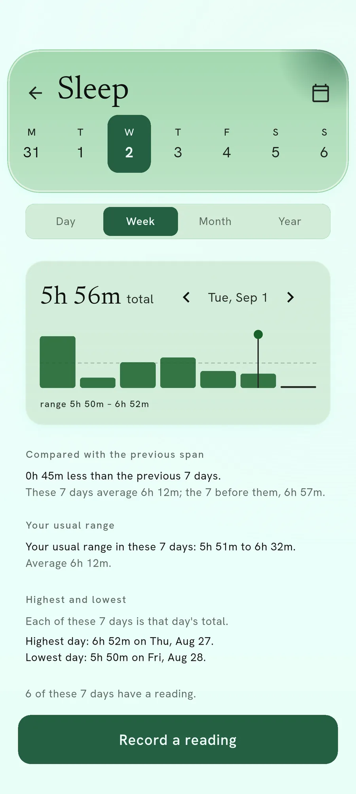
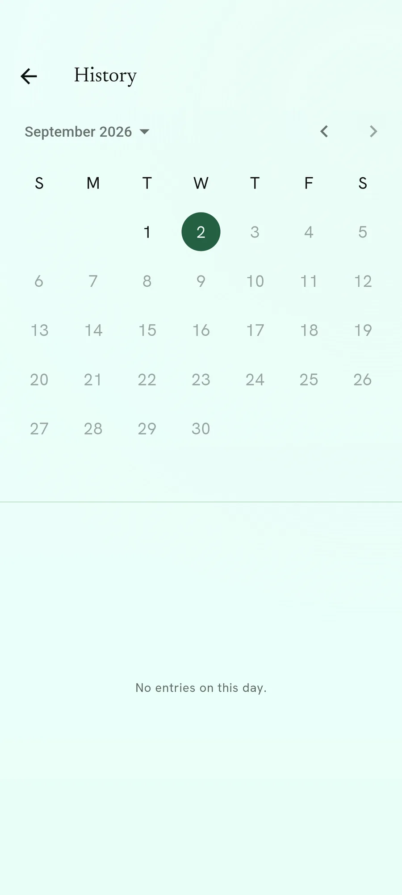
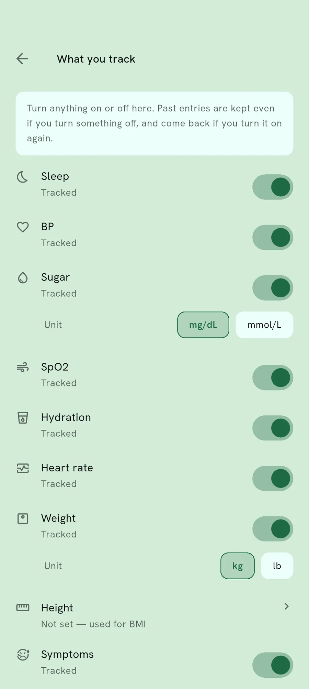

Trends
A run of readings, side by side.
One reading says very little. The point of writing them down is the shape they make over weeks.

What Trends shows
Every number you track gets a row, with a small chart of the last stretch of days. Tap one and it opens into a larger chart with the detail underneath.
A number you have never recorded still appears, showing nothing. That is deliberate: a gap you can see is worth more than one hidden from you.
Every tracked number, in one place
The rows are the things you chose to track. Turning one on or off in the menu changes what appears here.
Why an empty row is not a mistake
If a row vanished when it had no data, you would have no way to tell “I have not recorded this” from “this is not something I track”. Those are different, and only one of them is worth acting on.
So the row stays, empty, until you fill it.
Looking further back
Switch between day, week and month
Three buttons along the top change how much of your history the chart is showing.

Open the calendar for an older day
Pick any date and the chart moves to it, so an old reading is never out of reach.

Choose what appears here
What you track is a setting. Turn something on and its row appears; turn it off and past entries are kept.

Everything here runs on your own phone
No account, no email address, and no reading of yours on our servers. You can check that rather than take our word for it.